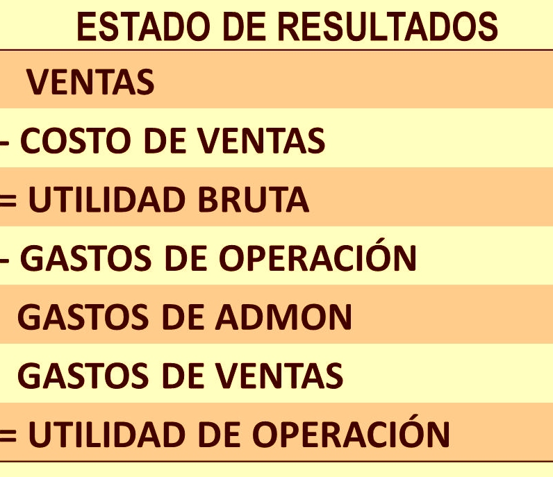

Estado de perdidas y ganancias
El estado de resultados es también conocido como estado de ganancias y pérdidas. Es un reporte financiero que muestra de manera minuciosa la situación de la empresa, es decir, si obtuvo ganancia o pérdidas en el ejercicio de un ciclo contable. Hay tres importantes elementos que conforman este reporte financiero: los ingresos, los costos y los gastos.

Como Realizar el Estado de Resultados
Estado1

Estado2